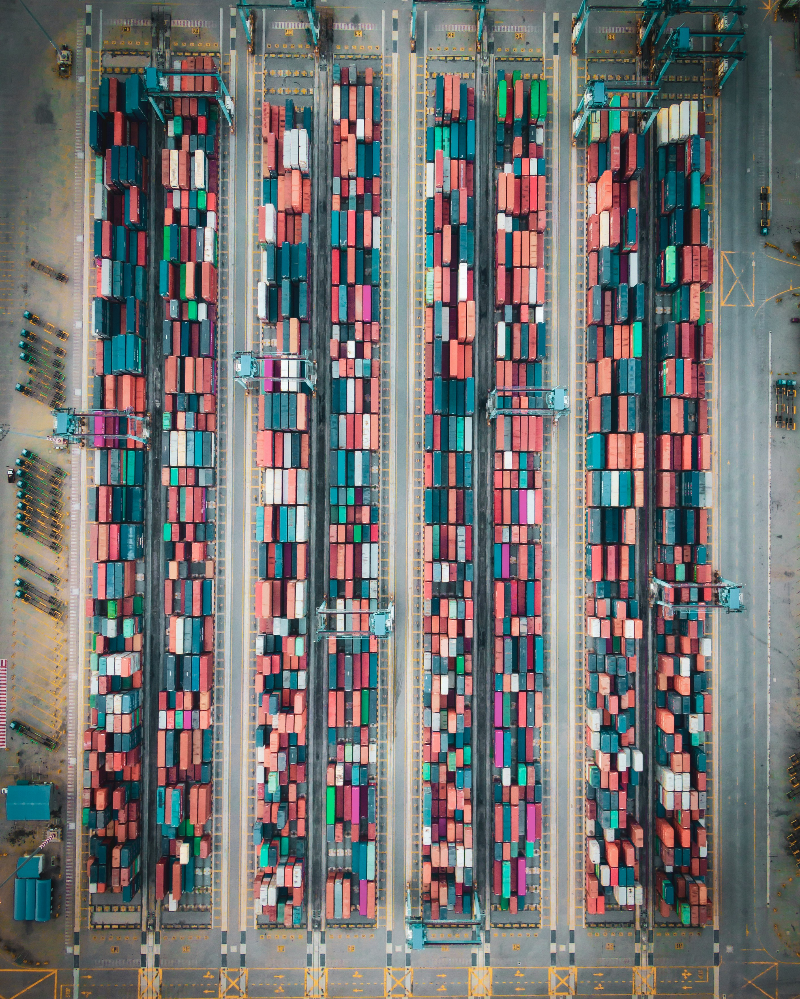
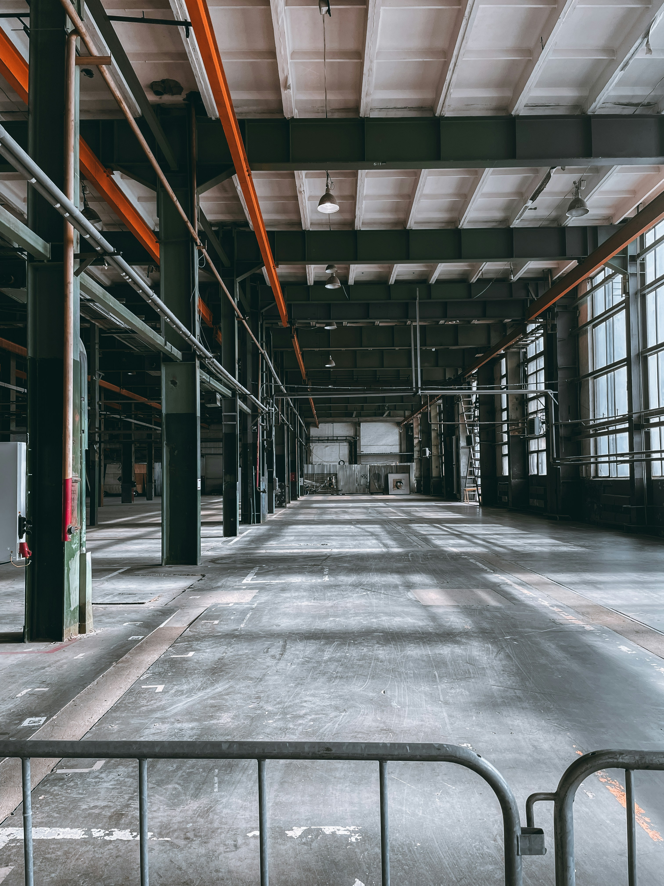

Supply Chains Are the New Alternative Asset
For decades, the obvious place to hunt for margin was the factory. Managers poured capital into automation, lean systems, quality programs, and scale. In parallel, firms embraced outsourcing and offshoring—shifting labor-intensive production to lower-cost countries to capture labor arbitrage and drive unit costs down.
That playbook worked. Manufacturing productivity rose steadily, and in many categories—especially electronics— scale and process innovation pushed quality-adjusted prices sharply lower. According to the U.S. Bureau of Labor Statistics, the CPI for personal computers and peripheral equipment fell 96% between 1997 and 2015; televisions fell 94% over the same period.

But success in manufacturing efficiency quietly changed the economics of value creation.
In many industries today, the cost of making a product is no longer the dominant component of what customers ultimately pay. Instead, a growing share of cost sits downstream—transportation, warehousing, handling, damage and shrink, returns, inventory carrying costs, and partner margins.
That is the supply chain. And increasingly, it determines whether products turn into cash efficiently—or not at all.
From Cost Center to Asset

This shift has a powerful implication. The most valuable “alternative asset” inside many firms today is no longer a new plant or a new SKU. It is a supply chain that can reliably convert demand into cash—fast, resilient, and data-driven—especially when competitors are stuck with stockouts, excess inventory, or volatile logistics costs.
Financial markets have noticed. Capital is flowing aggressively into the physical “pipes” of commerce. Investment firms and the alternatives arms of major banks are acquiring warehouses, last-mile facilities, cold storage networks, and even container fleets.
And importantly, the market is starting to price that reality in a very literal way. Look at where capital is flowing: investment firms and the alternatives arms of major banks are buying the physical “pipes” of commerce—warehouses, last-mile facilities, cold storage, and even container fleets—because these assets behave like infrastructure: they are scarce in the right locations, they throw off durable cash flows, and they become more valuable when volatility increases. For example, Goldman Sachs’ alternatives arm partnered with Dalfen to buy a nearly $300 million portfolio of logistics warehouses from Blackstone. J.P. Morgan’s Real Estate Income Trust announced acquisitions of two logistics warehouse portfolios totaling $124.2 million. Blackstone fought—and ultimately won—a takeover battle for the UK’s Warehouse REIT (valued around £489 million), and logistics portfolios continue to trade hands at billion-pound scale (e.g., Tritax Big Box buying a £1bn+ portfolio of warehouses from Blackstone, with Blackstone retaining an equity stake). Brookfield has been buying large warehouse portfolios (including a $428 million purchase of 53 warehouses) and has also gone further “upstream” into the enabling equipment layer by acquiring a major container lessor (Triton) in a deal valued at $13.3 billion including debt. Private infrastructure capital is doing the same in cold chain (EQT Infrastructure’s acquisition of Constellation Cold Logistics), and in shipping equipment (Stonepeak’s Textainer completing its acquisition of Seaco).
The New Capex: Data + Decisions
Here’s the operational punchline. We have largely industrialized the factory. We have not industrialized decisions about flow.
Modern supply chains generate messy, high-frequency, multi-party data—demand signals, lead times, supplier constraints, carrier performance, damage and shrink, returns, inventory accuracy, and compliance. The optimization opportunities are real, but only if firms can turn data into decisions.
This is why analytics and AI feature so prominently in modern supply chain narratives. McKinsey emphasizes that generative AI can boost performance only when paired with visibility, processes, and talent. Without those foundations, AI accelerates noise rather than insight.
Why This Changes Strategy

The supply chain is no longer a cost center to be minimized. It is an investable, improvable capability—one that determines who wins on service, who frees up working capital, and who protects margins when volatility hits.
Factories still matter. Products still matter. But in today’s economy, the real alternative asset is the system that moves goods from factory to customer—and the decisions that orchestrate that flow.